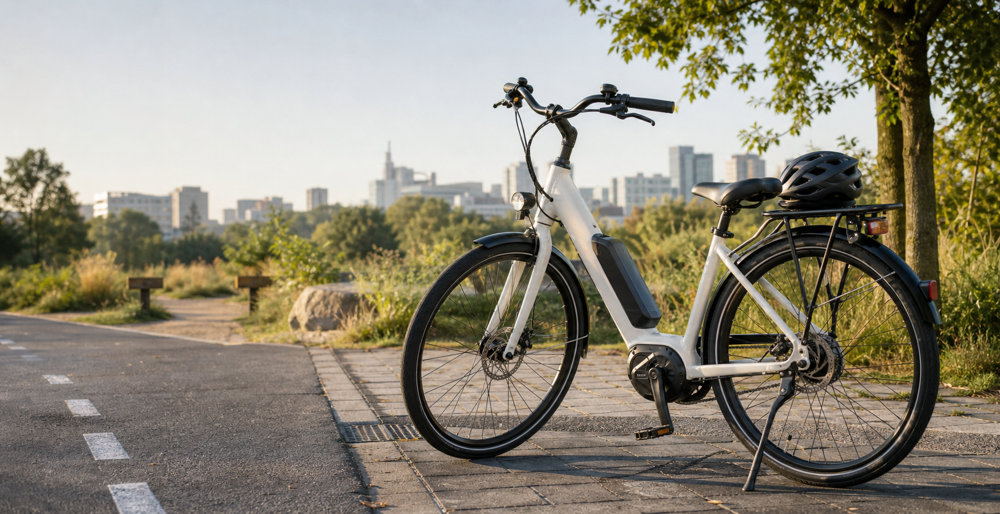

Best Overall
Balanced picks that cover commuting, errands, comfort, and ownership support.
- Aventon Level.3
- Velotric Discover 2
- Specialized Turbo Vado 5.0

2026 buyer-oriented review hub
A category-first map of e-bike manufacturers and models, with quick reviews, estimated star ratings, specs, images, and deeper model pages.
Start by use case
Most buyers should choose a category first, then compare two or three models inside that category. A great cargo bike can be a poor apartment bike; a great road e-bike can be the wrong grocery hauler.
Balanced picks that cover commuting, errands, comfort, and ownership support.
Lower-cost models that still have credible brakes, batteries, and everyday usability.
Rack, fenders, lights, predictable handling, and enough range for daily trips.
Lighter, faster, more bike-like e-bikes for riders who still want exercise.
Premium systems, dealer support, belt drives, Bosch/Shimano motors, and polished fit.
Passenger kits, payload, kickstand stability, and accessory ecosystems matter most.
Storage and transport picks; weight still matters as much as folded size.
Stable big-tire bikes for rough pavement, gravel, snow, and casual dirt paths.
Large or dual-battery bikes for riders who cannot charge often.
Real trail geometry, suspension, brakes, and local trail legality.
Low step-through frames, upright posture, gentle handling, and predictable assist.
Belt drives, internal hubs, proven systems, and fewer drivetrain chores.
Detailed reviews
Ratings are field-guide estimates that combine published testing, specs, safety posture, fit for category, service practicality, and value.

The safest default recommendation for many first-time buyers because it combines commuter equipment, smooth assist, security tech, dealer availability, and fair pricing.

A strong value pick if you want an e-bike that still feels close to a normal city or fitness bike.

The cargo pick for buyers who want real daily utility without jumping into premium cargo-bike pricing.

A budget utility folder that makes sense when storage and price matter more than polish.

A lighter, more polished folder for small-space riders who can live with payload and folding-retention tradeoffs.

A comfortable, powerful step-through with a lot of features for the money, especially for hilly urban routes.
More strong contenders

The range-anxiety pick: heavy, but unusually practical for long errands or commutes where charging is inconvenient.

A fun, stable all-terrain e-bike that can commute during the week and explore rougher surfaces on weekends.

A premium shop-supported commuter for people who want a refined ride, quality components, and dealer service.

A high-comfort luxury commuter with Bosch power, belt drive, and the details that make daily riding feel easy.
Manufacturer directory
This directory is intentionally broad: value direct-to-consumer brands, dealer-supported bike companies, cargo specialists, Dutch comfort brands, and premium e-MTB makers.
| Manufacturer | Where they fit | Models to know |
|---|---|---|
| Aventon | Value commuters, cargo, fat tire, and smart-security features | Level.3, Abound LR, Aventure.2, Pace |
| Lectric | Budget folding and utility e-bikes | XP4, XPedition, XP Trike |
| Ride1Up | Value road, city, and commuter bikes | Roadster V3, Portola, Prodigy |
| Rad Power / Rad Life | Utility, fat tire, and cargo heritage | Radster, RadRunner, RadWagon |
| Specialized | Premium commuter, road, and mountain e-bikes | Turbo Vado, Turbo Levo, Vado SL |
| Trek | Dealer-supported commuter, road, and trail | Verve+, Domane+, Rail+ |
| Gazelle | Dutch comfort commuters with Bosch systems | Eclipse, Ultimate, Medeo |
| Tern | Compact cargo, folding, and family utility | HSD, GSD, Vektron |
| Riese & Muller | Luxury cargo and touring e-bikes | Charger4, Nevo4, Load |
| Cannondale | Shop-supported fitness, commuter, and e-MTB | Synapse Neo, Moterra, Adventure Neo |
| Giant / Liv | Broad dealer-backed road, city, and mountain range | Explore E+, Road E+, Trance X E+ |
| Santa Cruz | Premium e-mountain bikes | Heckler, Skitch |
| Yuba | Cargo and family bikes | Spicy Curry, Mundo Electric |
| Benno | Compact cargo and utility | Boost, RemiDemi |
| Urban Arrow | Front-loader family cargo | Family, Cargo |
| Brompton | Premium compact folding | Electric C Line, Electric G Line |
| Gocycle | Premium folding urban e-bikes | G4, G4i |
| Urtopia | Lightweight smart city and folding bikes | Carbon Fold 2, Carbon 1 |
| Velotric | Comfort and value commuters | Discover 2, Nomad, T1 |
| NIU | Long-range and micromobility crossover | BQi-C3 Pro |
| Tenways | Light belt-drive city e-bikes | CGO600 Pro, AGO T |
| Priority | Belt-drive low-maintenance commuters | Current Plus, E-Coast |
| Vvolt | Clean belt-drive city and commuter bikes | Centauri, Alpha |
| Co-op Cycles | REI-backed value commuters | CTY e-series |
| Cube | European trekking and e-MTB range | Reaction Hybrid, Kathmandu Hybrid |
| Canyon | Direct-to-consumer road, gravel, and city e-bikes | Pathlite:ON, Grail:ON |
| Orbea | Lightweight road, gravel, and e-MTB | Gain, Rise, Diem |
| Haibike | Sport and e-mountain heritage | AllMtn, Trekking |
| Blix | Utility, cruiser, and cargo | Packa, Vika, Sol |
| Mokwheel | Fat-tire and outdoor utility | Basalt, Obsidian |
Review criteria
Does the bike do the job the buyer is hiring it for?
Brakes, battery certification claims, lighting, handling, and legal class clarity.
Service network, parts availability, accessories, warranty, and storage reality.
What the buyer gets after accounting for required accessories and likely discounts.
Sources